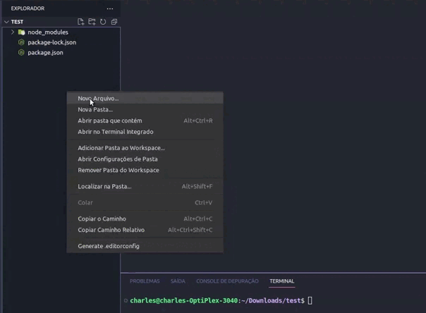

Comece com o AutomationSy
Uma biblioteca de automação para testes automatizados, desenvolvida em typescript com alta performance dos testes. AutomationSy é open source.

Uma biblioteca de automação para testes automatizados, desenvolvida em typescript com alta performance dos testes. AutomationSy é open source.